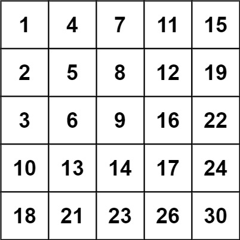

240. 搜索二维矩阵 II
从右上角出发：当前值太大就往左走（排除一整列），太小就往下走（排除一整行），每步排掉一行或一列。
思路
- 站在右上角：它是所在行里最大的、所在列里最小的，跟
target比大小结论是唯一的。 - 当前值
> target：这一列往下更大，整列排除，col--往左走。 - 当前值
< target：这一行往左更小，整行排除，row++往下走。 - 每步至少排除一行或一列，最多
m + n步出界；相等即找到。
图解
最优解
1class Solution {2 public boolean searchMatrix(int[][] matrix, int target) {3 int m = matrix.length, n = matrix[0].length;4 // 右上角：所在行里它最大，所在列里它最小5 int row = 0, col = n - 1;6 while (row < m && col >= 0) {7 int v = matrix[row][col];8 if (v == target) return true;9 // 太大：这一列下面更大，整列丢掉，往左走10 if (v > target) col--;11 // 太小：这一行左边更小，整行丢掉，往下走12 else row++;13 }14 return false;15 }16}题目
编写一个高效的算法来搜索 m x n 矩阵 matrix 中的一个目标值 target 。该矩阵具有以下特性：
- 每行的元素从左到右升序排列。
- 每列的元素从上到下升序排列。
示例 1：

输入：matrix = [[1,4,7,11,15],[2,5,8,12,19],[3,6,9,16,22],[10,13,14,17,24],[18,21,23,26,30]], target = 5 输出：true
示例 2：

输入：matrix = [[1,4,7,11,15],[2,5,8,12,19],[3,6,9,16,22],[10,13,14,17,24],[18,21,23,26,30]], target = 20 输出：false
提示：
m == matrix.lengthn == matrix[i].length1 <= n, m <= 300-109 <= matrix[i][j] <= 109- 每行的所有元素从左到右升序排列
- 每列的所有元素从上到下升序排列
-109 <= target <= 109
题面取自力扣当前版本。
数据快照 2026-11-04。题面版权归力扣所有，本站点仅供本人学习使用，请勿对外发布。